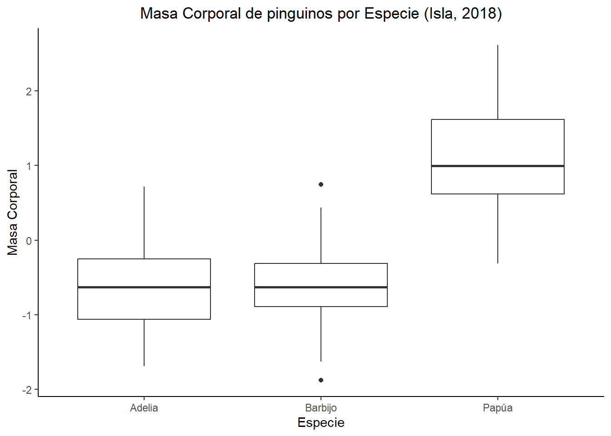

C11-Gráficos del communicación
Gráficos para communicar
Diseño
Cuando hicimos estadística la parte que quizás se cuesta mas es comunicar los resultados. Hay distintas formas de mostrarlos que depende en su audiencia y los pruebas que ha usado.
Pero siempre debe pensar en tu diseño para que sea claro y accesible sus datos. Por ejemplo, si quiere usar colores para distinguir grupos, no ocupes verde y rojo, porque hay gente que no pueden verlos. O si necesite usar, puede cambiar las formas de sus puntos también.
Generalmente los papers no se usan colores, o sea, que prefieren que todos sus gráficos son blancos/negros. *anota que en ggplot, el ‘theme_classic()’ funciona super bien para eso.
Siempre hay que asegurar que tiene un titulo (por gráfico o grupo de gráficos), que sus ejes también lo tienen y que solo tiene números en ejes que lo necesitan, y que los números tiene sentido (así que cambiar la renga de sus ejes si es necesario para mostrar bien sus datos).
pinguinos %>%
ggplot(aes(x=especie, y=masa_corporal_z))+
geom_boxplot()+
theme_classic()+
labs(x="Especie", y="Masa Corporal")+
ggtitle("Masa Corporal de pinguinos por Especie")+
theme(plot.title=element_text(hjust=0.5))Su titulo principal es importante para comunicar su propósito e información sobre sus datos. Generalmente (con ojo a presentaciones) es importante incluir el lugar y año/s de observación, y sus variables respuesta y explicativas. Igual, debería ser corto.
pinguinos %>%
ggplot(aes(x=especie, y=masa_corporal_z))+
geom_boxplot()+
theme_classic()+
labs(x="Especie", y="Masa Corporal")+
ggtitle("Masa Corporal de pinguinos por Especie (Isla, 2018)")+
theme(plot.title=element_text(hjust=0.5))
También, así que hice modelos con datos transformados, es super común que los profesores no le gustan si hace gráficos con datos transformados. Así que debería hacer sus gráficos sin outliers, pero con sus datos originales, o sea, no transformados.
Además, incluir los unidades de las medidas en sus títulos de ejes.
pinguinos %>%
ggplot(aes(x=especie, y=masa_corporal_g))+
geom_boxplot()+
theme_classic()+
labs(x="Especie", y="Masa Corporal (g)")+
ggtitle("Masa Corporal de pinguinos por Especie")+
theme(plot.title=element_text(hjust=0.5))
Anotar resultados en sus gráficos
Además, frecuentemente es necesario anotar sus gráficos con un valor p o algo así. Había varios métodos como siempre, pero voy a mostrarle solo algunos.
1. stat_compare_means()
Si ya lo hice una prueba de algún tipo, y quiere mostrar los resultados en su grafico, puede usar stat_compare_means para hacerlo. Pero, sea super seguro que ya lo hice, lo pruebe los supuestos y todo, porque puede hacer stat_compare_means y ser equivocado.
pinguinos %>%
group_by(especie)%>%
shapiro_test(masa_corporal_g)# A tibble: 3 × 4
especie variable statistic p
<fct> <chr> <dbl> <dbl>
1 Adelia masa_corporal_g 0.981 0.0324
2 Barbijo masa_corporal_g 0.984 0.561
3 Papúa masa_corporal_g 0.986 0.234 levene_test(data=pinguinos, masa_corporal_g ~ especie)# A tibble: 1 × 4
df1 df2 statistic p
<int> <int> <dbl> <dbl>
1 2 339 5.12 0.00645O sea que acá, no es todo normal, tampoco cumplen los datos con la homogeneidad de la varianza.
pinguinos %>%
ggplot(aes(x=especie, y=masa_corporal_g))+
geom_boxplot()+
theme_classic()+
labs(x="Especie", y="Masa Corporal (g)")+
ggtitle("Masa Corporal de pinguinos por Especie")+
theme(plot.title=element_text(hjust=0.5))+
stat_compare_means()Puede ver que el ‘stat_compare_means’ automáticamente seleccione lo mejor método (kruskal-wallis). Pero, siempre debe pruébalo para asegurar que es correcto.
De manera manual
Puede también añadir texto de manera manual, si ya tiene su valor p o quiere añadir algo. Hay dos métodos parecidos, pero a veces el annotate se sale con calidad mejor que el geom_text, así que se muestro los dos
2. annotate()
pinguinos %>%
ggplot(aes(x=especie, y=masa_corporal_g))+
geom_boxplot()+
theme_classic()+
labs(x="Especie", y="Masa Corporal (g)")+
ggtitle("Masa Corporal de pinguinos por Especie")+
theme(plot.title=element_text(hjust=0.5))+
stat_compare_means()+
ylim(2500, 7000)+
annotate(geom="text", x= "Papúa", y= 6750, label="*")pinguinos %>%
ggplot(aes(x=especie, y=masa_corporal_g))+
geom_boxplot()+
theme_classic()+
labs(x="Especie", y="Masa Corporal (g)")+
ggtitle("Masa Corporal de pinguinos por Especie")+
theme(plot.title=element_text(hjust=0.5))+
ylim(2500, 7000)+
annotate(geom="text", x= 1, y= 6750, label="Kruskal-wallis, p<2.2e-16")Gráficos para un paper
Para un paper, generalmente pone boxplots con un anova/kruskal-wallis y un dotplot/gráfico lineal con un glm/gam.
AN <- pinguinos %>%
ggplot(aes(x=especie, y=masa_corporal_g))+
geom_boxplot()+
theme_classic()+
labs(x="Especie", y="Masa Corporal (g)")+
ggtitle("Masa Corporal de pinguinos por Especie")+
theme(plot.title=element_text(hjust=0.5))+
ylim(2500, 7000)+
annotate(geom="text", x= 1, y= 6750, label="Kruskal-wallis, p<2.2e-16")+
theme(aspect.ratio=1)
GAM <- pinguinos %>%
ggplot(aes(x=largo_aleta_mm, y=masa_corporal_g, color=especie))+
geom_point()+
geom_smooth()+
theme_classic()+
labs(x="Especie", y="Masa Corporal (g)")+
ggtitle("Masa Corporal por Largo Aleta y Especie")+
theme(plot.title=element_text(hjust=0.5))+
ylim(2500, 7000)+
theme(aspect.ratio=1)
library(patchwork)
AN/GAMPero igual hay más tipos de gráficos que puede ocupar a mostrar las relaciones en sus datos. Por ejemplo, puede usar un ‘dotplot’ para mostrar relaciones generales.
pinguinos %>%
ggplot(aes(x=largo_pico_mm, y=masa_corporal_g))+
geom_point()+
theme_classic()+
labs(x="Largo Pico (mm)", y="Masa Corporal (g)")+
ggtitle("Masa Corporal de pinguinos por Especie")+
theme(plot.title=element_text(hjust=0.5))+
ylim(2500, 7000)+
theme(aspect.ratio=1)También son útiles los gráficos de columnas con barras de error. Son super útiles con datos de abundancia.
flor <- datos::flores
datsumir <- flores %>%
group_by(Especie)%>%
reframe(
mean=mean(Largo.Sepalo),
SE_am = sd(Largo.Sepalo)/sqrt(n()),
Largo.Sepalo
)
le <- datsumir %>%
ggplot(aes(x=Especie, y=mean, fill=Especie))+
geom_col(position="dodge")+
labs(x="Especie de flor", y="promedio del largo sepalo (mm)")+
ggtitle("Promedio del largo sepalo de flores por especie")+
theme(axis.text.x = element_text(angle = 60, hjust=0.5, vjust=.6))+
theme(legend.position = "none")+
theme_classic()+
scale_fill_manual(values=c("#0d7244", "#3C5488FF", "#91D1C2FF"))
le2 <- le + geom_errorbar(aes(ymin=mean-SE_am, ymax =mean+SE_am))
le2Patchwork
Al principio hablé del ‘facet’ que puede usar para mostrar más información en sus plots. También hay un paquete que se llama ‘patchwork’ que deja posible combinar más que un plot en un solo gráfico.
Es útil si quiere mostrar un boxplot y una línea juntos, o si quiere mostrar dos boxplots pero no puede usar facet.
A partir, hace los gráficos que quiere juntar y guárdelos con un nombre único.
library(patchwork)
A <- pinguinos %>%
ggplot(aes(x=especie, y=largo_pico_mm))+
geom_boxplot()+
theme_classic()+
labs(x="Especie", y="Largo pico (mm)")+
#ggtitle("Masa Corporal de pinguinos por Especie")+
theme(plot.title=element_text(hjust=0.5))+
stat_compare_means()
B <- pinguinos %>%
ggplot(aes(x=especie, y=masa_corporal_g))+
geom_boxplot()+
theme_classic()+
labs(x="Especie", y="Masa corporal (g)")+
#ggtitle("Masa Corporal de pinguinos por Especie")+
theme(plot.title=element_text(hjust=0.5))+
stat_compare_means()
C <- pinguinos %>%
ggplot(aes(x=especie, y=largo_aleta_mm))+
geom_boxplot()+
theme_classic()+
labs(x="Especie", y="Largo aleta (mm)")+
#ggtitle("Masa Corporal de pinguinos por Especie")+
theme(plot.title=element_text(hjust=0.5))+
stat_compare_means()
D <- pinguinos %>%
ggplot(aes(x=especie, y=alto_pico_mm))+
geom_boxplot()+
theme_classic()+
labs(x="Especie", y="Alto pico (mm)")+
#ggtitle("Masa Corporal de pinguinos por Especie")+
theme(plot.title=element_text(hjust=0.5))+
stat_compare_means()Ahora puede usar los nombres y el orden de las operaciones matemáticas para organizar sus gráficos.
Recuerde PEMDAS: Paréntesis, exponenciales, multiplicación/división, suma/resta
El paquete ‘patchwork’ ocupa específicamente los paréntesis, sumas y división.
Por ejemplo:
A + B(A+B)/CA/C/BA + B + CA+B/C+D(A+B)/(C+D)Hay muchas opciones, pero automáticamente no se organiza sus títulos y tamaños. Así que hay otras líneas que puede añadir a su grafico entero.
título principal
plot_annotation(title= “título deseado”)
A + B + C + plot_annotation(title = "Rasgos físicos de pinguinos")numerar sus gráficos
Para una figura de un paper científico, es normal añadir números o letras a cada grafico para que puede explicar cada uno en su leyenda. Puede hacer ese de forma automática en patchwork así: por números: Plot_annotation(tag_levels = c(“1”)) por letras: Plot_annotation(tag_levels = c(“a”))
A + B + C + plot_annotation(tag_levels = c("1"), title = "Rasgos físicos de pinguinos")A + B + C + plot_annotation(tag_levels = c("a"), title = "Rasgos físicos de pinguinos")Tamaño
Puede ver que los tres gráficos acá son más altos que anchos y que no pueden leer todo el texto. Puede usar plot_layout() para cambiar sus tamaños y orden en varias maneras.
plot_layout(ncol=2)
Con ese código puede cambiar su numera de columnas. O sea que según el código principal debería tener los tres gráficos en una línea, pero según el ncol=2, solo va a tener dos.
A + B + C + plot_annotation(tag_levels = c("a"), title = "Rasgos físicos de pinguinos")+plot_layout(ncol = 2)plot_layout(widths=c())
Puede cambiar la ratio del ancho de sus gráficos también. Lo hice por cada columna. Por ejemplo, si hay dos columnas, puede poner ploy_layout(widths=c(1,2,1) y su columna central va a ser lo más ancho de todos.
A + B + C + plot_annotation(tag_levels = c("a"), title = "Rasgos físicos de pinguinos")+ plot_layout(widths = c(1, 2, 1))Lo mismo con heights=c()
A + B + C + plot_annotation(tag_levels = c("a"), title = "Rasgos físicos de pinguinos")+ plot_layout(ncol=2, widths=c(1,1), heights = c(5,1))También puede ocupar unidades especificas para cambiar tamaño.
plot_layout(widths=unit(c(4,4,4), c(‘cm’,‘cm’,’cm)))
O sea, que cada colúmna debe tener un ancho de 4cm.
ploy_layout(heights=unit(c(5), c(‘cm’)))
o sea, así que solo hay una colúmna ahora, esta colúmna va a tener una altura de 5cm.
A + B + C + plot_annotation(tag_levels = c("a"), title = "Rasgos físicos de pinguinos")+ plot_layout(widths=unit(c(4,4,4), c('cm','cm','cm')), height = unit(c(5), c('cm')))Generalmente, funciona mejor con no más de dos gráficos por fila, y de forma más cuadrado, pero funciona igual si quiere cambiar.
A + B + C + D + plot_annotation(tag_levels=c("a"), title="Rasgos físicos de pingunios")+ plot_layout(widths=unit(c(5,5), c('cm','cm')), height=unit(c(3.5,3.5),c('cm','cm')))También sea más facíl con ‘annotate()’ que ‘stat_compare_means()’ porque puede cambiar más facilmente donde se queda su texto con ‘annotate()’
A <- pinguinos %>%
ggplot(aes(x=especie, y=largo_pico_mm))+
geom_boxplot()+
theme_classic()+
labs(x="Especie", y="Largo pico (mm)")+
#ggtitle("Masa Corporal de pinguinos por Especie")+
theme(plot.title=element_text(hjust=0.5))+
annotate(geom="text", x= 1.85, y= 62, label="Kruskal-wallis, p<0.001")A + B + C + D + plot_annotation(tag_levels=c("a"), title="Rasgos físicos de pingunios")+ plot_layout(widths=unit(c(5,5), c('cm','cm')), height=unit(c(3.5,3.5),c('cm','cm')))También peude cambiar sus ejes para controlar el tamaño.
A <- pinguinos %>%
ggplot(aes(x=especie, y=largo_pico_mm))+
geom_boxplot()+
theme_classic()+
labs(x="Especie", y="Largo pico (mm)")+
#ggtitle("Masa Corporal de pinguinos por Especie")+
theme(plot.title=element_text(hjust=0.5))+
annotate(geom="text", x= 1.85, y= 65, label="Kruskal-wallis, p<0.001")+
ylim(30,67)A + B + C + D + plot_annotation(tag_levels=c("a"), title="Rasgos físicos de pingunios")+ plot_layout(widths=unit(c(5,5), c('cm','cm')))Otros opciones
Un opcion adicional, que puede aprender desde YouTube, u otros scripts, un análisis de componentes principales toma sus datos y lo hice una comparación entre la fuerza de las relaciones entre ellos. O sea, que crea un matriz visual en que puede ver si son relacionados y con q nivel de fuerza.
A finalizar quiero contarse que hay muchos métodos de analizar encima de lo que hice en esta clase y temas más profundos según el glm/gam/anova. O sea, sigue buscando por más ejemplos y métodos en los papers que lee para que pueda aprobar los métodos más recién.
Fuentes de ayuda: * Chatgpt (si tiene errores en su code especialmente, pero no es perfecto así que ten cuidado) * ?help (parte de r, puede poner ‘?’ y cualquier función y recibe información * https://es.r4ds.hadley.nz/ este libro (español) super bueno y descriptivo * Stackoverflow <- donde gente pide ayuda por sus preguntas en R y otras se responden, puede ser ayudante (mayormente ingles) * Pagina de UCLA <- en ingles pero con buen ejemplos https://stats.oarc.ucla.edu/other/dae/ * Yo! Y sus profes